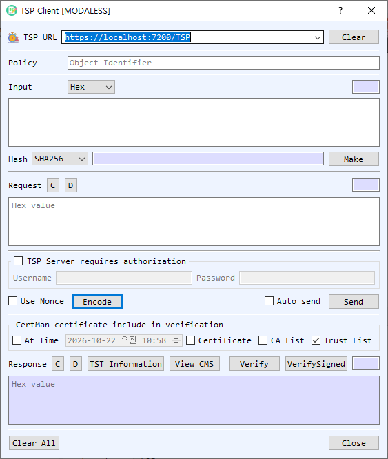

TSP Client Dialog Guide
The TSP Client creates Time-Stamp Protocol requests, sends them to a timestamp authority, and verifies the returned timestamp token and signature.

Figure 1. TSP Client dialog. Hash the data, create and send a timestamp request, then verify the token returned by the TSA.
Screen Areas
- TSP URL — Enter or select the timestamp authority URL. Clear clears the URL list/input.
- Policy — Optionally enter the requested timestamp policy OID.
- Input — Enter the data to timestamp and select its representation (Hex, String, or Base64). The adjacent field shows its length.
- Hash / Make — Choose a hash algorithm and select Make to calculate the digest of the input. The digest appears beside the button.
- Request — Encode creates a TSP request using the input, selected hash, optional policy, and nonce setting. C clears the request; D decodes it.
- TSP Server requires authorization — Enable this group and enter the server's Username and Password for HTTP Basic authentication.
- Use Nonce / Auto send / Send — Include a nonce in the request, transmit automatically after encoding, or send the current request manually.
- Certificate included in verification — Configure At Time, Certificate, CA List, and Trust List for response verification. The default screen has Trust List enabled.
- Response — Displays the timestamp response in hexadecimal. TST Information displays the parsed timestamp information; View CMS inspects the CMS token; Verify validates the response; VerifySigned checks the signed token. C clears and D decodes the response.
- Clear All / Close — Clear dialog data or close the client.
Request a Timestamp
- Enter the source data in Input and choose its representation.
- Select a Hash and choose Make to compute the digest. The request is built from the data and selected hash.
- Optionally enter a Policy OID, enable Use Nonce, and provide server credentials if authorization is required.
- Select Encode. Enable Auto send to transmit immediately, or choose Send manually.
- Review the returned response in the Response area.
Verify the Timestamp
- Select the certificate verification options: Trust List, CA List, an optional Certificate, and At Time if checking at a specific date/time.
- Select Verify to validate the timestamp response and VerifySigned to verify the signed token as needed.
- Use TST Information or View CMS to inspect the token contents.
Notes
- The source data's digest is sent in the request; the original data itself is not included in a standard timestamp request.
- The selected hash and policy must be supported by the timestamp authority.
- Successful transmission does not establish that a token is valid. Review the verification result and trust settings.